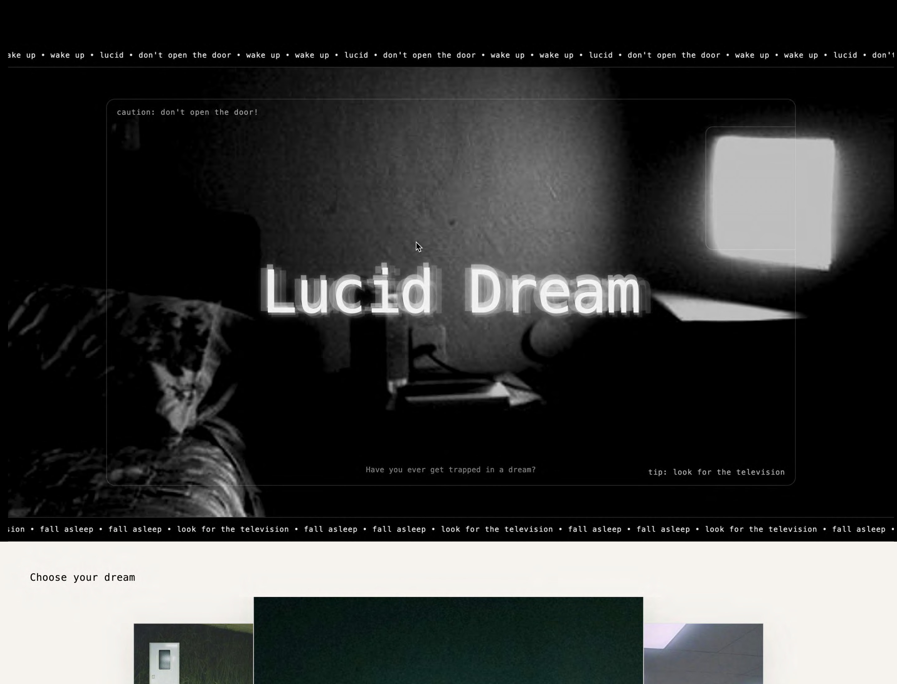
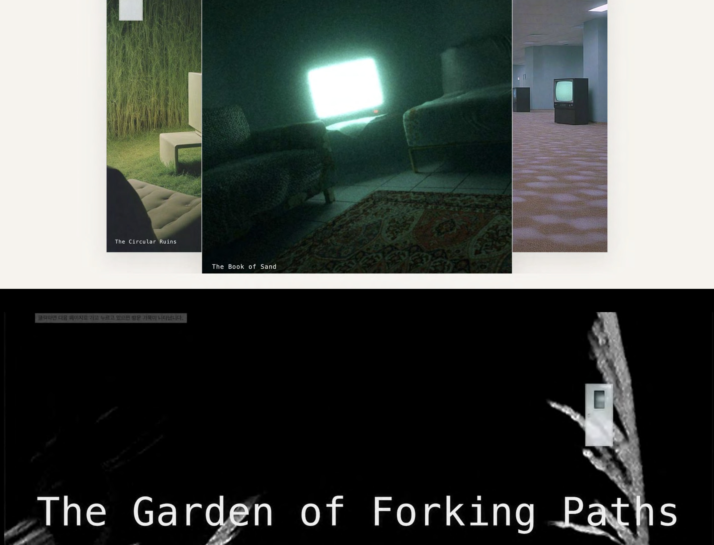
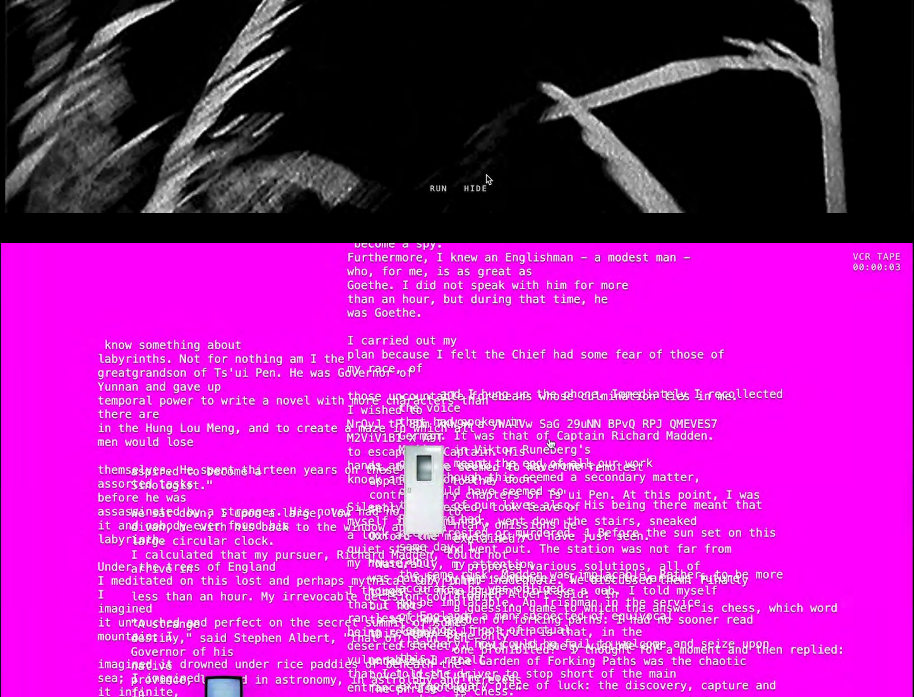
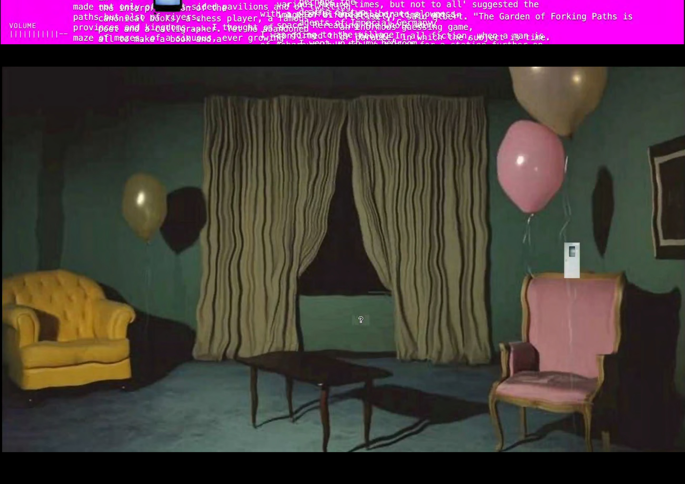

Inspired by the nonlinear nature of dreams, this website allows users to explore a story through a nonlinear structure. I designed it as an interactive experience where the user feels trapped inside a dream and gradually tries to escape from it.



